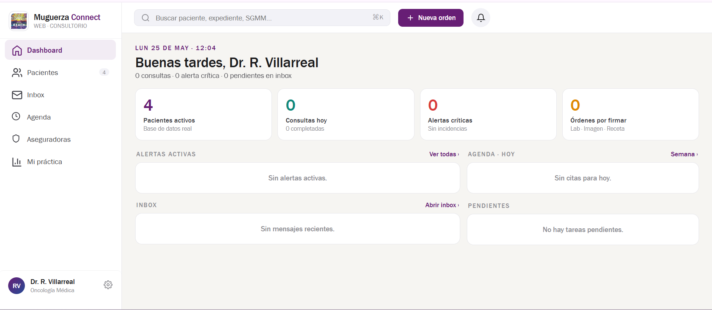

Journeys Secretaria & Médico
Flows internos del CRM: cómo la secretaria gestiona la bandeja de WhatsApp, crea y edita citas, tramita pre-autorizaciones y entrega resultados. El médico ve su agenda y expedientes sin acceso a chats.
C1 Bandeja WhatsApp CRM
Vista exclusiva de secretaria en Connect conectada vía WhatsApp Business API. Gestiona conversaciones que requieren intervención humana — el médico no tiene acceso a esta sección.
Acciones disponibles para la secretaria
- Tomar conversaciónAsignarse el chat, visible para el equipo
- ResponderEnviar mensaje vía WhatsApp Business API
- Plantilla rápidaInsertar texto predefinido
- Crear citaModal sin salir del chat
- Adjuntar archivoPDF o imagen al paciente
- Nota internaSolo visible en CRM, no al paciente
- ReasignarA otra secretaria o supervisor
- Devolver al botBot retoma con needs_human=false
Edge cases & manejo
| # | Caso | Manejo |
|---|---|---|
| E1 | Dos secretarias abren el mismo chat | Lock: la primera en tomar asigna; la segunda ve aviso |
| E2 | Paciente escribe mientras secretaria redacta | Notificación de nuevo mensaje sin perder el borrador |
| E3 | Ventana 24h cerrada sin mensaje del paciente | Forzar plantilla HSM pre-aprobada |
| E4 | Mensaje saliente falla (número bloqueado) | Error visible en chat, marcar whatsapp_blocked en paciente |
| E5 | Secretaria acaba turno con chats abiertos | Sistema sugiere reasignar; supervisor ve huérfanos |
secretary ve su clínica · secretary_supervisor ve todas · doctor sin acceso · admin solo lectura de auditoríaC2 Gestión de citas desde CRM
Crear, editar, reagendar o cancelar citas manualmente. Aplica a citas originadas por llamada, handoff del bot, walk-in o consulta de especialidad.
Acciones sobre cita existente
| Acción | Descripción |
|---|---|
| Editar | Hora, clínica o servicio — queda en audit log |
| Reagendar | Libera slot, reserva nuevo, notifica al paciente |
| Cancelar | Motivo obligatorio, notifica al paciente |
| Marcar no-show | Al cierre del día |
| Convertir a recurrente | Series de infusión cada X días |
| Adjuntar documentos | Receta u orden médica |
Edge cases & manejo
| # | Caso | Manejo |
|---|---|---|
| E1 | Paciente sin nombre completo o sin INE | Permitir con datos mínimos, perfil marcado incompleto |
| E2 | Slot tomado al confirmar | Recargar disponibilidad automáticamente |
| E3 | Fuera de horario operativo | Bloquear con mensaje claro |
| E4 | Servicio requiere referencia sin documento | Crear cita con flag pendiente de referencia |
| E5 | Cita con aseguradora sin póliza validada | Crear cita y generar tarea de preauth |
| E6 | Dos citas el mismo día para el paciente | Advertir pero permitir |
| E7 | Edición de cita ya confirmada por paciente | Notificar el cambio al paciente por WhatsApp |
C3 Intake de documentos y pre-autorización
Gestionar documentos del paciente que llegaron vía WhatsApp o que la secretaria sube manualmente, y tramitar la pre-autorización con la aseguradora antes de la cita.
Edge cases & manejo
| # | Caso | Manejo |
|---|---|---|
| E1 | Aseguradora tarda más de 48h | Recordatorio automático, registrar en seguimiento |
| E2 | Paciente no tiene documento requerido | Secretaria coordina con médico tratante |
| E3 | Preauth rechazada por cobertura | Dar al paciente opción de pago privado |
| E4 | Cita urgente sin tiempo de preauth | Marcar pago privado con posible reembolso posterior |
| E5 | Póliza vencida | Notificar al paciente de inmediato |
C4 Resultados y follow-up
Subir resultados de laboratorio o imagen al expediente del paciente y disparar la notificación automática vía WhatsApp. Resultados críticos van al médico antes de llegar al paciente.
Criterios de resultado crítico
| Criterio | Acción |
|---|---|
| Valores fuera de rango marcados por el laboratorio | Escalar al médico antes de liberar |
| Hallazgos de imagen con nota de urgencia del radiólogo | Escalar al médico antes de liberar |
| Cualquier duda por parte de la secretaria | Consultar al médico antes de liberar |
Edge cases & manejo
| # | Caso | Manejo |
|---|---|---|
| E1 | Resultado de imagen como DICOM | v1: subir PDF del reporte, no el DICOM bruto |
| E2 | Archivo mayor a 16 MB | Comprimir o dividir antes de subir |
| E3 | Paciente bloqueó el bot | Notificar por llamada o email (datos en expediente) |
| E4 | Médico no disponible para revisar crítico | Escalar a médico de guardia o supervisor |
| E5 | Resultado llega a la clínica equivocada | Reasignar al expediente correcto |
C5 Dashboard del médico
Vista principal del médico: agenda del día, expedientes de sus pacientes y acceso a historial clínico. Sin acceso a la bandeja de WhatsApp ni a información financiera.

Edge cases & manejo
| # | Caso | Manejo |
|---|---|---|
| E1 | Médico sin citas hoy | Dashboard vacío con mensaje claro |
| E2 | Paciente llega sin confirmar | Secretaria marca desde su vista; médico ve el status actualizado |
| E3 | Médico quiere ver citas de otra fecha | Filtro de fecha en agenda |
| E4 | Resultado crítico mientras médico está en consulta | Badge de notificación en pestaña Resultados |
| E5 | Médico de guardia ve pacientes de otro médico | Solo si tiene permiso de guardia habilitado por admin |